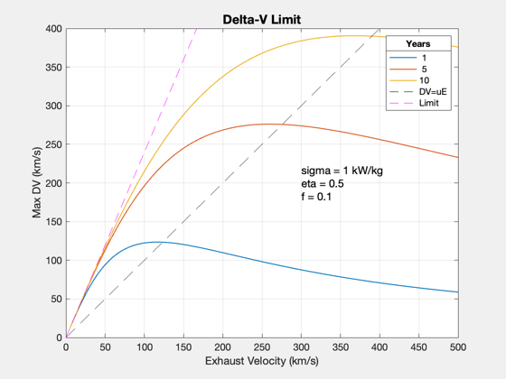
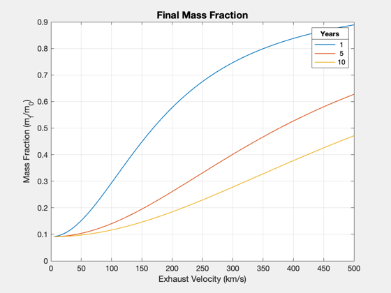
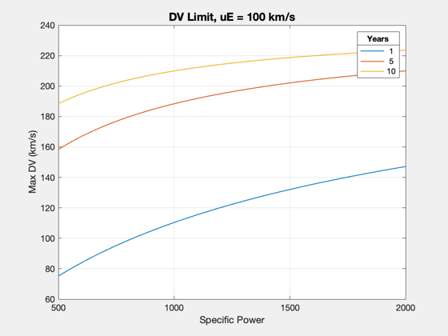
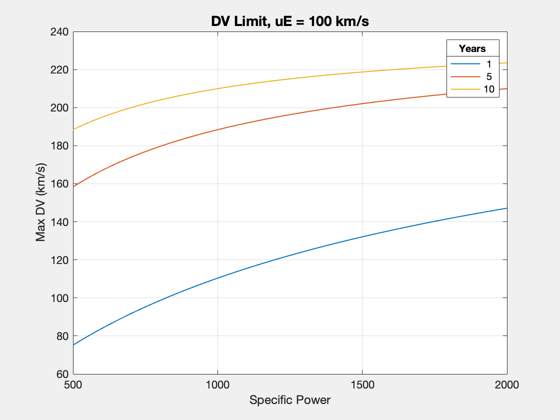

Contents
Delta-V limits for a selected mission
See also: Straight2DStructure, DVLimit, DVForTime, Plot2D
%-------------------------------------------------------------------------- % Copyright (c) 2018 Princeton Satellite Systems, Inc. % All rights reserved. %-------------------------------------------------------------------------- d = Straight2DStructure; d.sigma = 1000; % W/kg d.eta = 0.5; d.f = 0.1;
DV limit
tFs = [1 5 10]; uEs = linspace(5,500); DVmax = []; dVstar = []; massFrac = []; for k = 1:length(tFs) tF = tFs(k)*365.25*86400; d.tF = tF; DVmax(k,:) = DVLimit( tF, uEs, d.sigma, d.eta, d.f ); dVstar(k) = fminbnd( @(x) -DVLimit( tF(1), x, d.sigma, d.eta, d.f ), uEs(1), uEs(end) ); massFrac(k,:) = exp(-DVmax(k,:)./uEs); end Plot2D(uEs,DVmax,'Exhaust Velocity (km/s)','Max DV (km/s)','Delta-V Limit') yy = axis; hold on; plot(linspace(yy(1),yy(2)),linspace(yy(1),yy(2)),'k--') plot(linspace(yy(1),yy(2)),linspace(yy(1),yy(2))*log((1+d.f)/d.f),'m--') axis(yy) legs = cellstr(num2str(tFs')); ll = legend([legs(:)',{'DV=uE'},{'Limit'}]); ll.Title.String = 'Years'; text(300,200,sprintf('sigma = %g kW/kg\neta = %g\nf = %g',... d.sigma*1e-3,d.eta,d.f),'fontsize',12) Plot2D(uEs,massFrac,'Exhaust Velocity (km/s)','Mass Fraction (m_f/m_0)','Final Mass Fraction') ll = legend(num2str(tFs')); ll.Title.String = 'Years'; 
With exhaust velocity and power
d.tF = 1*365.25*86400; uEs = [50 100 120 150 200 500]; powers = linspace(0.5,10); limit = []; DVs = []; for j = 1:length(uEs) d.uE = uEs(j); for k = 1:length(powers) DVs(j,k) = DVForTime(powers(k)*1e6, d); end [~,limit(j)] = DVForTime(powers(k)*1e6, d); end Plot2D(powers,DVs,'Power (MW)','DV (km/s)','Delta-V per Fixed Time') ll = legend(num2str(uEs')); ll.Title.String = 'uE';

With specific power and fixed uE
d.uE = 100; d.eta = 0.4; sigmas = [500 750 1000 1250 1500]; powers = linspace(0.5,10); limit = []; DVs = []; for j = 1:length(sigmas) d.sigma = sigmas(j); for k = 1:length(powers) DVs(j,k) = DVForTime(powers(k)*1e6, d); end [~,limit(j)] = DVForTime(powers(k)*1e6, d); end titleS = sprintf('Delta-V per Fixed Time, %g Years',d.tF/86400/365.25); Plot2D(powers,DVs,'Power (MW)','DV (km/s)',titleS) ll = legend(num2str(sigmas')); ll.Title.String = 'Sigma'; limit = d.uE*log(d.f/1+d.f); % array of durations sigmas = linspace(0.5,2)*1e3; DVmax = []; massFrac = []; for k = 1:length(tFs) tF = tFs(k)*365.25*86400; % DVLimit numL = (d.uE*1e3)^2/2/d.eta./sigmas + (1+d.f)*tF; denL = (d.uE*1e3)^2/2/d.eta./sigmas + d.f*tF; ff = log(numL./denL); DVmax(k,:) = d.uE*ff; massFrac(k,:) = exp(-DVmax(k,:)./d.uE); end titleS = sprintf('DV Limit, uE = %g km/s',d.uE); Plot2D(sigmas,DVmax,'Specific Power','Max DV (km/s)',titleS) ll = legend(num2str(tFs')); ll.Title.String = 'Years'; %-------------------------------------- % $Id: 815e8d39854b519a87b9d9987ba88ce01b1d6c85 $
 
